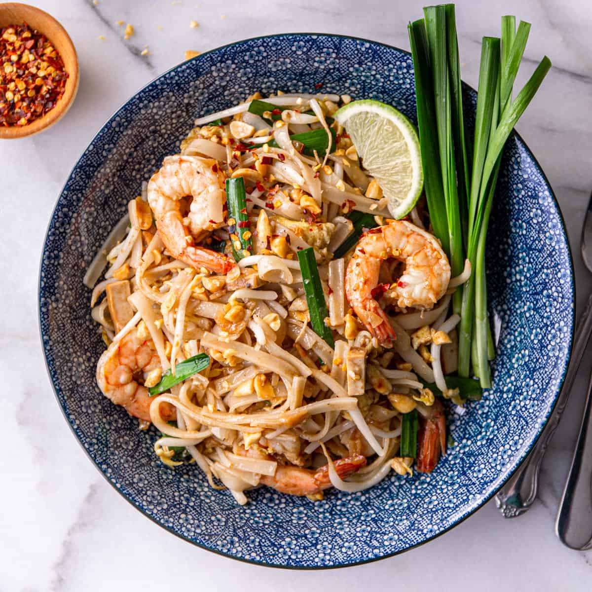

Pad Thai Recipe

Description
Enjoy Vegetarian Pad Thai, a vibrant stir-fry of rice noodles with vegetables and tofu, coated in a tangy tamarind sauce, topped with crushed peanuts and lime.
Ingredients
- Rice noodles
- Tofu, cubed/li>
- Egg (optional)
- Carrot, julienned
- Bell pepper, sliced
- Bean sprouts
- Green onions, chopped
- Garlic, minced
- Peanuts, crushed
Recipe Steps
- Soak rice noodles in warm water until soft.
- Fry tofu in oil until golden, set aside.
- In the same pan, add garlic and vegetables, stir-fry until just tender.
- Add noodles, tamarind paste, soy sauce, and brown sugar; toss well.
- Mix in tofu and bean sprouts.
- Serve topped with peanuts, green onions, and a lime wedge.